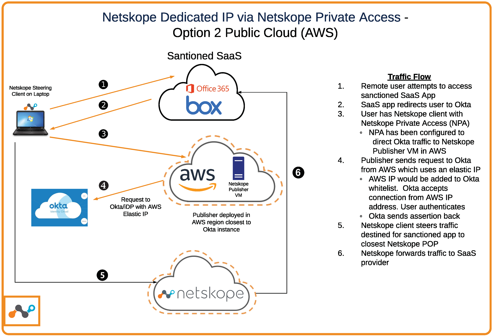
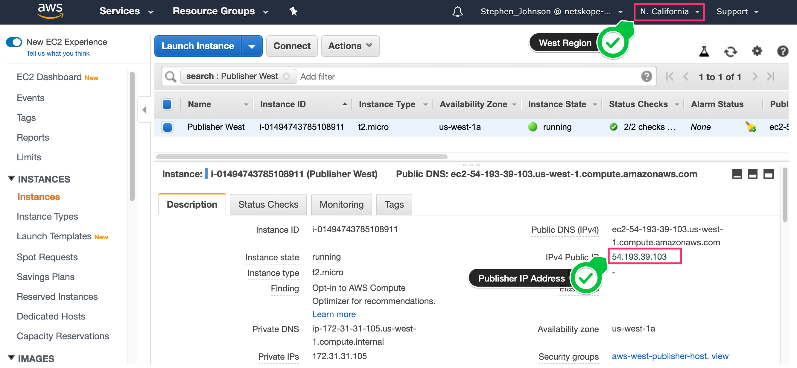

Source IP Anchoring for an IdP with Netskope Private Access
This topic describes how to obtaining a dedicated IP address from Netskope for your environment.
Background
Many organizations have been utilizing IP address allowlisting on their corporate cloud apps in order to ensure additional security should a user's credentials be compromised by a malicious actor. This allowlisting is inclusive of all egress IP addresses for your data centers and remote offices. Typically for remote users, a VPN connection is required to access private applications and also their corporate cloud applications.
With Netskope, the traffic flow changes when utilizing the Netskope Client. Because the Netskope Client encrypts its connections to the Netskope proxy, cloud applications and IdP providers no longer see the corporate egress IP addresses and instead see an IP addresses for Netskope’s POPs.
The preferred solution is to add Netskope’s POP IP addresses to your IP address allowlisting for conditional access and employ multi-factor authentication (MFA) with your IdP provider. If you do not want to use MFA or open up access to your cloud applications to Netskope’s POP IP address ranges, the following is an alternative solution to preserving your dedicated IP addresses when accessing SaaS apps or web sites.
Solution
Let’s assume you are using an IdP provider like Okta, and that you have only one datacenter for all of their traffic.
By default, all Okta traffic is steered to Netskope proxy. This method changes this default behavior. Instead of sending Okta traffic through the Netskope proxy, this method defines your Okta URL as a private application inside of Netskope Private Access.
Netskope Publisher: There are a couple of options. You could deploy a Publisher inside your existing corporate data center. All Publisher traffic would be seen as your existing egress IP address (1.1.1.1).
 |
Another option is to determine where your Okta instance is located, and deploy a Publisher in AWS, GCP, or Azure within a region that is closer to Okta instance.
|  |
Open up a Terminal/Command Shell and try pinging your tenant URL:
 |
You can see in the response, this Okta tenant is located in US-West-2 Region inside of AWS. Since you're East Coast based, it would be better to deploy a Publisher in the US-West-2 Region of AWS so the Netskope Security Cloud can provide the most optimized path to Okta from wherever the remote user is located without having to route back to the east coast data center just to go to the west coast data center for Okta.
In AWS
Go to the AWS console.
|  |
Deploy the Publisher AMI image into the West region of AWS and make note of the Public IP Address. Best practice for a production deployment of a Publisher is to use an elastic IP address so that if the Publisher is rebooted, it will keep the IP address across reboots.
Okta:netskopepartners.okta.com Okta Location: AWS US-West-2 Region Customer Corporate Egress IP: 1.1.1.1 Customer Location: East Coast Netskope Publisher Egress IP: 54.193.39.103 (US-West-2 Region)
In Netskope
In your Netskope tenant, go to Settings > Security Cloud Platform > App Definition and click on the Private Apps tab.
 |
Define the Okta URL as a Private Application and make it accessible in Real-time Protection policy for Private Access.
This is going to force ONLY the Okta traffic to be sent via NPA publisher. The publisher ip address is an ip address that the customer is ‘renting’ from AWS and is not shared by other customers.
Upon a successful login to the cloud application all of the cloud app traffic will be sent from the Netskope Client directly to Netskope proxy.
In Okta
In Okta Administration, make sure you are IP allowlisting ONLY your corporate data center’s egress IP address (1.1.1.1) and the NPA Publisher IP address (54.193.39.10). These are the only source IP addresses that the your Okta tenant will allow a successful login from (even if a malicious actors is on Netskope’s network has compromised credentials).
In Cloud Applications
You should still allow Netskope’s POP IP addresses along with your corporate egress IPs.
A phased approach to allowlist apps with Netskope IP ranges is outlined below.
Summary
With the above configuration, if a malicious actor somehow obtains compromised credentials and am also a user of the Netskope Security Cloud, when attempting to access one of your corporate cloud applications, authentication will be redirected to Okta, but because the auth request is NOT coming from your Publisher or corporate egress IP address, a log in attempt will fail, even with valid credentials.
Phased Approach for Allowlisting Netskope IP Ranges
This phased approach has been deployed by users that have IP allowlisted around120 SaaS applications.
Phase 1: Bypass all of your 120 sanctioned apps in Netskope. Don't steer the apps until you allowlisted the Netskope IP ranges in each SaaS app. You will receive immediate visibility to ~2300 unsanctioned cloud applications, as well as all web site traffic, if you use Netskope Secure Web Gateway in place of your existing SWG.
Phase 2: Add Netskope IP ranges to your sanctioned apps. This doesn't have to be all at once - you could add our ranges in batches.
Phase 3: As you allowlist the Netskope IP ranges to your SaaS apps, add sanctioned SaaS apps back to Netskope steering config so they pass through the NewEdge network for visibility, control, DLP, threat detection, etc. Note - we purchased a /17 network so we have plenty of room for our future POPs that we'll be adding around the globe. Once you add our ranges you should not have to adjust them again due to the public IP space we have.Continue until all of your 120 SaaS apps have the Netskope IP ranges added to their Allowed List.